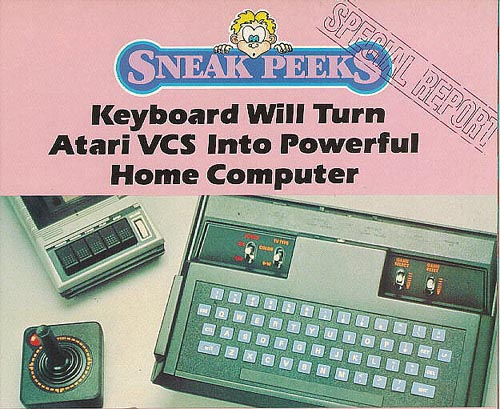
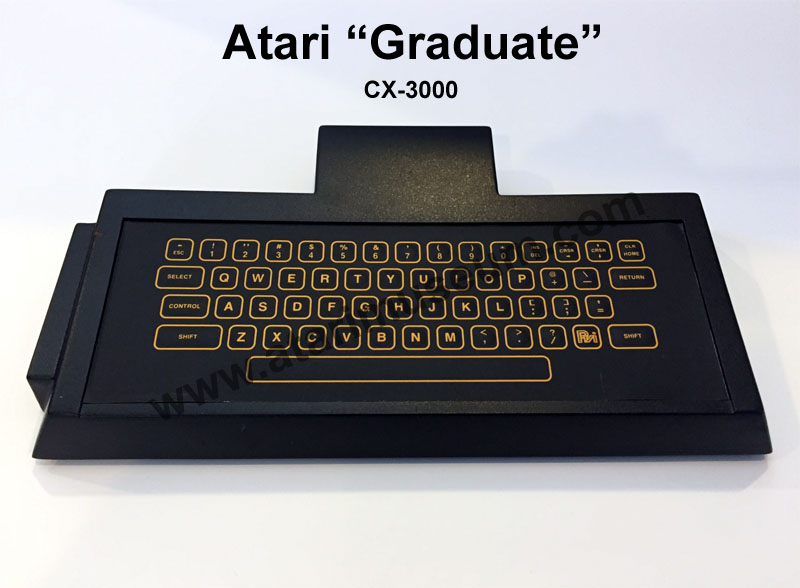
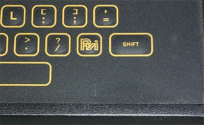
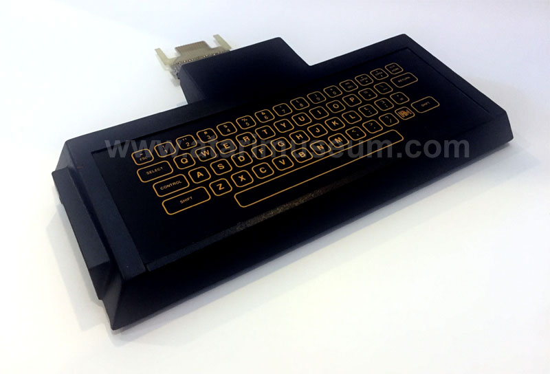
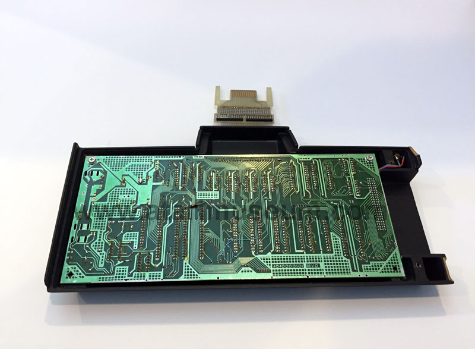

During the heyday of the early 80's when video games were the hottest thing
out there next to Cabbage Patch dolls and Smurfs, it was every video gamers
dream to be able to upgrade their video game system to a computer.
Every manufacture had made one promise or another to create the "Upgradable"
video game system. Mattel electronics since the introduction of the
Intellivision promised a computer upgrade which was delayed for years upon
years. Coleco hastily sold its ADAM computer which was plagued
by severe bugs in the software and horrible quality control in the hardware.
The ADAM was Coleco's downfall since they stopped all production of the
Colecovisions and put all resources into its ADAM computer, when nearly
all the ADAM's were returned for one reason or another Coleco was stuck
with a massive inventory of damage goods, no sales revenue and a tarnished
reputation....
|

The above Atari Age
Magazine photo
shows a blue membrane keyboard version
with power
behind the rear of the cartridge
connector neck. Regan Cheng
(former Atari
Industrial Designer) explained
that the version shown above was
a mockup with rubber keys
glued onto it. |
However, back in 1982, fresh from finishing the Commodore VIC-20 and C64
computers, 3 former Commodore engineers began brainstorming a new idea
to sell in large volume. Looking to Atari with its installed
base of close to 12 million Atari VCS 2600 video game consoles they decided
to create a computer keyboard add-on. Peripheral Visions
Incorporated (PVI) was born. They approached Atari with
the idea. Atari discussed this idea with its engineers who
said it could not be done. PVI had never programmed on
the Atari 2600 before, yet in 2 days they were able to create a text screen
demo to show Atari. To make their presentation at Atari
Headquarters more mysterious, PVI packaged their ROM chip into a large
black box that they weighed down with a power supply and other items to
make it seem like there was much more to their project then just some fancy
programming.

PVI Membrane CX-3000 "Graduate" Prototype
The Graduate is a remarkable little device which downloads a looping
program into the 128 byte memory of the VCS and in turn, simply turns the
VCS into the Graduates video support hardware. The Graduate
has 8K of onboard memory with specifications to allow it to add another
24K through its buss connector. The unit is clean and simplistic
in its design, yet performs an outstanding job and allowing the 2600 to
in fact become a computer in itself. The first prototypes used
a membrane keyboard. PVI went to the same supplier as Atari
did for its Atari 400 keyboard, the keyboard layout was slightly different
including the PVI logo in place of the Atari "Fuji" logo on one of the
keys.


Originally the add-on was supposed to be nothing more then computer keyboard
add-on, but Atari began to make more and more demands on PVI to create
more and more enhancements to the system such as moving the cartridge port
from the side to the top of the unit. Making the connection
neck into the 2600 so that it could expand and contract to fit both the
deeper 2600 model and the 2600A with a more shallow cartridge slot.
Then the real demands came. The custom chip that PVI
designed was called FRODO, Atari then spec'd out 2 new accompanying chips
to allow the keyboard to accept peripherals and new "Enhanced Graphics"
modes to make the 2600 more competitive with the Intellivision and the
Colecovision. These 2 new chips were part of what was called
"Bubbles" the new chips were called Fred and Wilma. Frodo was
then renamed Pebbles. In one internal PVI document titled:
"The Flintstones meet Middle Earth", specifications were already being
made to take all 3 chips and combine them into one. PVI
insisted that the project was going to end up going way over the targeted
price of $79 and more into the $350 range which put it up against its own
Atari 400 and the Vic-20. Atari continued to push for the project
specifications for the enhanced graphics and capabilities which PVI worked
on. In September of 1983 James Morgan took over as head of Atari
and among the numerous projects slated for cancellation was The Graduate
and it was never released. PVI then looked for new ventures
to move to, first they looked into building a new computer system, but
with the market saturated with low end PC's they looked into adding chips
into musical synthesizer keyboards since Bob Yannes (who designed the SID
chip) was very adept in the music field and then later they moved into
assorted multimedia devices. The Atari Historical Society Staff
would like to personally thank Bob Yannes of PVI for all his assistance
and time.
NOTE: The Atari Graduate CX-3000
made its first public appearance at the World of Atari Show 98 in Las Vegas
on August 21-23 and was shown to hundreds of passerby's at our booth, Next
Generation Gaming issue #47 also talks about the Atari Graduate Keyboard,
photo's are shown at some of the various WOA98 websites.
Peripherals listed in the below chart were promised and prototypes do exist.
Atari was so confident that these products would make it to market, they
were already shipping line art advertisement flyers to its dealers.
Click on GRADUATE PERIPHERALS
to see the actual flyer. (124k)
{kind=link}